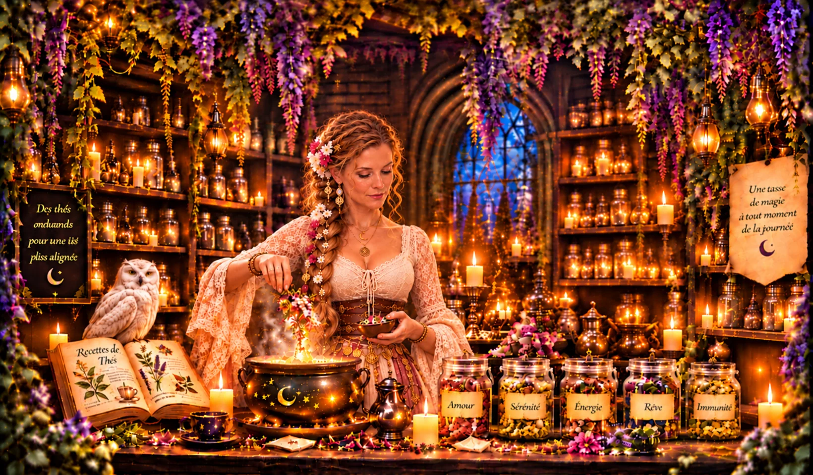
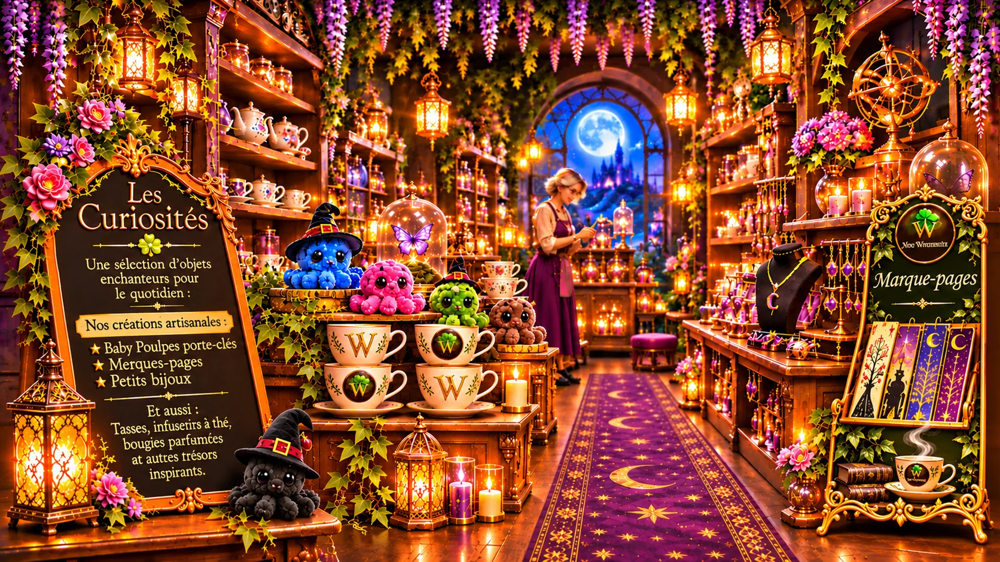
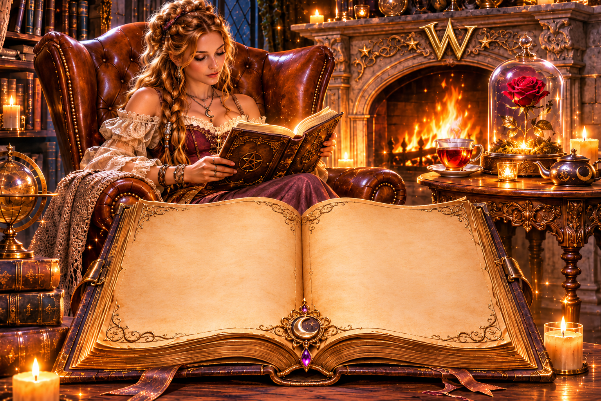

♧Ingrédients naturelset sélectionnés avec soin
♡Bien-être & équilibreau quotidien grâce à la magie de chaque tasse
☆Une touche de magiedans chaque tasse
♧Petites séries artisanaleset éthiques

✦ L’ATELIER DE LA FLAMME ✦Atelier
Bougies & encens dans un espace chaleureux, artisanal et mystérieux.


1 / 1
Pour lire confortablement sur téléphone, choisissez « Lire en grand ».